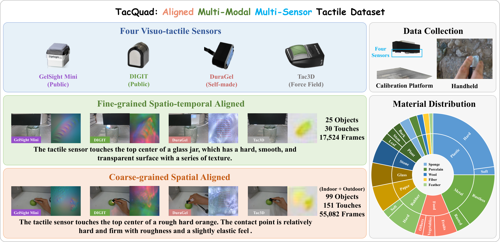
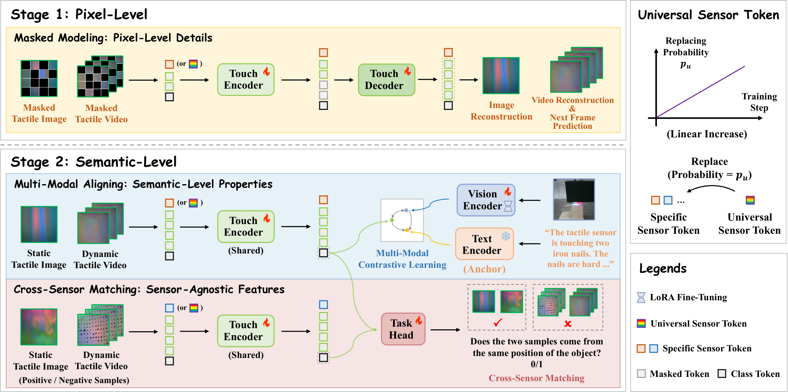

摘要
视触觉传感器旨在模拟人类的触觉感知，使机器人可以精细地理解和操作物体。多种设计精细的视触觉传感器已被集成到机器人系统中，帮助机器人完成不同任务。由于传感器缺乏统一标准、输出数据各异，构建通用而强大的触觉感知系统仍然困难。我们认为，学习统一的多传感器表征是解决这一问题的关键，可以整合不同传感器并促进触觉知识在它们之间迁移。为此，我们构建了 TacQuad。该数据集对齐了来自四种视触觉传感器的多模态数据，可直接整合不同传感器的信号。 人可以借助纹理和压力变化等多种触觉信息感知物理环境。我们据此提出，从静态与动态两个角度学习统一的多传感器表征。AnyTouch 将触觉图像和视频纳入同一个多层级框架，以增强综合感知能力并支持跨传感器迁移。该框架用掩码建模捕捉触觉数据的像素级细节，通过多模态对齐和跨传感器匹配学习与传感器无关的语义特征，从而提高感知及迁移能力。 我们系统分析了跨传感器迁移能力，并在多种离线数据集和真实倒液任务中验证了方法。实验结果表明，该方法优于现有方法，并在不同传感器上展现出较强的静态和动态感知能力。代码、TacQuad 数据集和 AnyTouch 模型均已在 gewu-lab.github.io/AnyTouch/ 开放。
Visuo-tactile sensors aim to emulate human tactile perception, enabling robots to precisely understand and manipulate objects. Over time, numerous meticulously designed visuo-tactile sensors have been integrated into robotic systems, aiding in completing various tasks. However, the distinct data characteristics of these low-standardized visuo-tactile sensors hinder the establishment of a powerful tactile perception system. We consider that the key to addressing this issue lies in learning unified multi-sensor representations, thereby integrating the sensors and promoting tactile knowledge transfer between them. To achieve unified representation of this nature, we introduce TacQuad , an aligned multi-modal multi-sensor tactile dataset from four different visuo-tactile sensors, which enables the explicit integration of various sensors. Recognizing that humans perceive the physical environment by acquiring diverse tactile information such as texture and pressure changes, we further propose to learn unified multi-sensor representations from both static and dynamic perspectives. By integrating tactile images and videos, we present AnyTouch , a unified static-dynamic multi-sensor representation learning framework with a multi-level structure, aimed at both enhancing comprehensive perceptual abilities and enabling effective cross-sensor transfer. This multi-level architecture captures pixel-level details from tactile data via masked modeling and enhances perception and transferability by learning semantic-level sensor-agnostic features through multi-modal alignment and cross-sensor matching. We provide a comprehensive analysis of multi-sensor transferability, and validate our method on various offline datasets and in the real-world pouring task. Experimental results show that our method outperforms existing methods, exhibits outstanding static and dynamic perception capabilities across various sensors. The code, TacQuad dataset and AnyTouch model are fully available at gewu-lab.github.io/AnyTouch/ .
1 引言
触觉感知是人类感知物理世界的重要感官。多年来，研究人员一直致力于通过多种触觉传感器 (Liu et al., 2022; Maiolino et al., 2013; Yuan et al., 2017) 赋予机器人类似人类的触觉感知能力。其中，具有与人类触感相当的高分辨率的各种视觉-触觉传感器已引起广泛关注 (Yuan et al., 2017; Donlon et al., 2018; Lambeta et al., 2020)。许多研究尝试使用配备视觉-触觉传感器的机器人执行抓取 (Xu et al., 2024) 和插入 (Li et al., 2014) 等操作任务。
Tactile perception is an important sense through which humans perceive the physical world.
For many years, researchers have been working to endow robots with human-like tactile perception abilities through diverse tactile sensors ( Liu et al., 2022 ; Maiolino et al., 2013 ; Yuan et al., 2017 ) .
Among them, with high resolution comparable to human touch, various types of visuo-tactile sensors have garnered widespread attention ( Yuan et al., 2017 ; Donlon et al., 2018 ; Lambeta et al., 2020 ) .
Many studies have attempted to use robots equipped with visuo-tactile sensors to perform manipulation tasks such as grasping ( Xu et al., 2024 ) and inserting ( Li et al., 2014 ) .
然而，由于视觉触觉传感器的标准化程度较低，不同传感器在感知相同触觉信息时可能会出现差异。这种可变性给构建精确的机器人触觉系统带来了挑战，因为传感器特定的数据收集 (Yang et al., 2022; Gao et al., 2023) 与模型训练过程限制了单个传感器的数据规模与多样性，从而导致本体感知能力不足。为应对这一问题，部分初步研究尝试利用多传感器数据进行协同处理，以增强不同传感器之间的知识传递能力 (Yang et al., 2024; Zhao et al., 2024)。不过，缺乏对齐的多传感器数据使得这些尝试难以有效整合不同传感器，并构建统一的表示空间。考虑到这一数据问题，Rodriguez et al. (2024) 收集了双传感器配对数据集，以实现跨传感器数据生成。 然而，他们对特定操控任务的专注限制了传感器与采集对象的多样性。此外，他们忽略了成对多模态数据在提升传感器可迁移性以及实现全面触觉感知方面的潜在优势。
However, due to the low standardization of visuo-tactile sensors, different sensors may exhibit discrepancies in perceiving the same tactile information.
This variability poses challenges to building precise robotic tactile systems, as sensor-specific data collection ( Yang et al., 2022 ; Gao et al., 2023 ) and model training limit the data scale and diversity for the model of a single sensor and lead to suboptimal perception capabilities.
To address this issue, some initial efforts have explored using multi-sensor data collaboratively to enhance cross-sensor knowledge transferability ( Yang et al., 2024 ; Zhao et al., 2024 ) .
Nevertheless, the lack of aligned multi-sensor data has hindered these attempts from effectively integrating disparate sensors and constructing a unified representation space.
Considering this data issue, Rodriguez et al. (2024) collected a dual-sensor paired dataset to enable cross-sensor generation.
However, their focus on specific manipulation tasks limited the variety of sensors and collected objects. Moreover, they overlooked the potential benefits of paired multi-modal data
for enhancing sensor transferability and achieving comprehensive tactile perception.
为了增强多传感器整合的支持能力，我们使用了四种不同的视觉-触觉传感器，收集了包含 72,606 接触框架的 TacQuad 多模态多传感器触觉数据集。我们从公开可用的传感器、自制的传感器以及力场传感器中选取了这些具有代表性的传感器，以确保数据的多样性。为了平衡数据收集成本与配对精度之间的权衡，我们在校准平台上收集了细粒度的时空对齐数据，而大规模粗糙空间对齐数据则通过手持设备收集，如图 1 所示。此外，我们还使用相机拍摄被触摸的物体，并为每次收集结果标注触觉属性描述，从而形成了一个完整的触觉-视觉-语言数据集。 该数据集利用成对多模态数据作为桥梁，以缓解传感器波动对触觉语义特征理解的影响，并使得传感器能够被明确整合到统一的多传感器空间中，从而实现传感器之间的有效知识传递。
To enhance support for multi-sensor integration, we collect TacQuad , an aligned multi-modal multi-sensor tactile dataset containing 72,606 contact frames, using four different visuo-tactile sensors.
We select these representative sensors from publicly available sensors, self-made sensors, and force field sensors to ensure diversity.
To balance the trade-off between the cost of data collection and the accuracy of pairing, we collect fine-grained spatio-temporal aligned data on a calibration platform, while larger-scale coarse-grained spatial aligned data is acquired through the handheld collection, as shown in Figure 1 .
Additionally, we capture the objects being touched using a camera and annotate tactile attribute descriptions for each collection, forming a comprehensive touch-vision-language dataset.
This dataset utilizes paired multi-modal data as a bridge to mitigate the impact of sensor variability on the understanding of tactile semantic features, and enables the explicit integration of sensors into a unified multi-sensor space for effective knowledge transfer between sensors.
基于这一坚实的基础，我们进一步探讨了学习统一多传感器表示的问题：如何获得能够适应多种任务的统一多传感器表示？我们认识到，人类的触觉感知是静态与动态过程的结合，因为人类从纹理、滑动和压力变化等多种信息中获得全面的触觉感知。基于这一认识，我们提出从静态和动态两个角度学习统一表示，以适应各种任务需求。
Building on this solid foundation, we further revisit the challenge of learning unified multi-sensor representations: How can we obtain unified multi-sensor representations adaptable to a wide array of tasks?
We recognize that the human tactile perception is a combination of static and dynamic processes, as humans derive comprehensive tactile perception from multiple types of information such as texture, sliding, and pressure changes.
Drawing on this insight, we propose learning unified representations from both static and dynamic perspectives to accommodate a range of tasks.
为了获得此类多传感器表征，我们引入了 AnyTouch 这一统一的静态-动态多传感器触觉表征学习框架。该框架整合了触觉图像与视频的输入形式，共同利用这些数据来增强模型对静态特性与动态变化的感知能力。此外，我们设计了多层级架构，以全面提升模型捕捉像素级触觉细节与语义级与传感器无关特征的能力。具体而言，我们采用掩模建模 (He et al., 2022; Tong et al., 2022) 技术，以最大化利用多传感器数据来学习精细的像素级细节。随后，我们通过多模态对齐及新型跨传感器匹配任务，来理解不同传感器下的物体语义级触觉特性，并提取出与传感器无关的特征。 我们的目标是让多传感器表示能够共享同一空间，并通过所代表物体的触觉信息进行聚类，从而缩小各传感器之间的差距。为了进一步促进不同传感器之间的知识传递，我们在训练过程中建议随机用通用传感器 tokens 替换特定传感器的 tokens 和 (Yang et al., 2024)。该策略能够确保模型保持处理与感知触觉数据的能力，同时从所有已感知的传感器中获取知识，以用于处理未感知的传感器。
To obtain multi-sensor representations of this nature, we introduce AnyTouch , a unified static-dynamic multi-sensor tactile representation learning framework.
This framework integrates the input forms of tactile images and videos, collectively utilizing them to reinforce the model’s abilities to perceive both static properties and dynamic changes.
Moreover, we design a multi-level architecture to comprehensively strengthen the model’s capabilities for capturing pixel-level tactile details and semantic-level sensor-agnostic features.
Specifically, we utilize masked modeling ( He et al., 2022 ; Tong et al., 2022 ) to maximize the use of multi-sensor data for learning fine-grained, pixel-level details. Subsequently, we conduct multi-modal aligning and a novel cross-sensor matching task to understand semantic-level tactile properties of objects across different sensors and extract sensor-agnostic features. We aim for the multi-sensor representations to share a common space and cluster by the tactile information of the object they represent, thereby reducing the gap between sensors.
To further promote knowledge transfer across multiple sensors, we propose randomly replacing the sensor-specific tokens ( Yang et al., 2024 ) with universal sensor tokens during training.
This strategy ensures the model maintains its ability to process and perceive tactile data across various sensors, while also providing knowledge from all seen sensors for generalization to unseen sensors.
我们进行了定量与定性实验，以分析多传感器数据的可迁移性，并评估我们的框架对多传感器表示空间的影响。在此基础上，我们通过多种触觉数据集以及真实场景实验——精细倾倒实验，全面评估了 AnyTouch 的静态与动态触觉感知能力。实验结果证明了 AnyTouch 的静态与动态感知能力以及跨传感器可迁移性。我们希望从静态与动态两个角度学习统一多传感器表示的方法能够建立一种标准化的视觉-触觉感知学习范式，并进一步激发多传感器表示学习领域的研究。
We conduct both quantitative and qualitative experiments to analyze the transferability of multi-sensor data and assess the impact of our framework on the multi-sensor representation space.
Building on this, we comprehensively evaluate the static and dynamic tactile perception capabilities of AnyTouch across various tactile datasets and through a real-world experiment: fine-grained pouring.
The experimental results demonstrate the static and dynamic perception abilities and cross-sensor transferability of AnyTouch.
We hope the approach of learning unified multi-sensor representations from both static and dynamic perspectives will
establish a standardized learning paradigm for visuo-tactile perception and further inspire research in multi-sensor representation learning.
2 相关研究
多源学习。利用更大规模且多样化的多源数据进行学习，有望提升模型的性能与泛化能力，但在整合数据表示空间方面面临挑战。研究人员发现，多源模型往往难以实现统一的表示方式，这源于不同数据源之间的差异 (Glorot et al., 2011; Zhao et al., 2019)。对比学习 (Wang et al., 2022b; Zhao et al., 2023) 被用于学习适用于多源语言训练的语言中立表示，而循环一致性损失 (Zhu et al., 2017; Kim et al., 2022) 则用于协调多源图像生成中的目标域分布。类似地，为了整合来自不同传感器的多源触觉数据，诸如多传感器联合训练 (Zhao et al., 2024; Higuera et al., 2024; Gupta et al., 2025)、多模态对齐 (Yang et al., 2024) 以及跨传感器生成 (Rodriguez et al., 2024) 等技术也已被提出。 然而，这些方法忽略了联合利用多模态数据与对齐的多传感器数据来弥合传感器差异的优势。在本研究中，我们构建了一个对齐的多模态多传感器数据集，并提出了学习统一多传感器表示的方法。
Multi-Source Learning. Learning from multi-source data with greater data scale and diversity is expected to enhance the model’s performance and generalization ability, but faces challenges in integrating the data representation spaces.
Researchers have found that multi-source models often struggle to capture a unified representation suffering from the discrepancies between data sources ( Glorot et al., 2011 ; Zhao et al., 2019 ) .
Contrastive learning ( Wang et al., 2022b ; Zhao et al., 2023 ) is proposed to learn language-agnostic representations for multi-source language training, while cycle consistency loss ( Zhu et al., 2017 ; Kim et al., 2022 ) aligns the target domain distributions in multi-source image generation.
Similarly, to integrate multi-source tactile data from different sensors, techniques such as multi-sensor joint training ( Zhao et al., 2024 ; Higuera et al., 2024 ; Gupta et al., 2025 ) , multi-modal alignment ( Yang et al., 2024 ) , and cross-sensor generation ( Rodriguez et al., 2024 ) have emerged. However, these methods overlook the benefits of jointly utilizing multi-modal data and aligned multi-sensor data to bridge the sensor gap.
In this work, we collect an aligned multi-modal multi-sensor dataset and propose learning unified multi-sensor representations.
视觉-触觉感知。视觉-触觉传感器因其高分辨率而受到广泛关注 (Yuan et al., 2017; Donlon et al., 2018; Lambeta et al., 2020; Zhang et al., 2024; Zhang et al., 2025) . 如今，许多研究利用视觉-触觉传感器来捕捉接触变形，从而实现如密集堆积等灵巧操作。 (Li et al., 2022) ，抓取 (Xu et al., 2024) ，以及插入操作 (Li et al., 2014) 视觉触觉传感器也可与其他传感器协同工作，帮助机器人完成更复杂的操作任务。例如， Feng et al. (2024) 将视觉-触觉信号与视觉及音频数据动态整合，以协同完成精细操作任务，例如倾倒操作及与键槽的插销插入操作。除了需要动态触觉感知的任务外，视觉-触觉传感器还被用于静态任务，如材料分类。 (Yang et al., 2022) 以及形状重建 (Gao et al., 2022b) . 然而，由于视觉-触觉传感器的标准化程度较低，这些方法无法充分利用其他传感器所提供的大量且多样化的数据，且缺乏传感器间的可移植性。在本研究中，我们提出了从静态与动态两个角度学习统一的多传感器表示方法。
Visuo-tactile Perception. Visuo-tactile sensors have garnered widespread attention due to their high resolution ( Yuan et al., 2017 ; Donlon et al., 2018 ; Lambeta et al., 2020 ; Zhang et al., 2024 ; Zhang et al., 2025 ) . Nowadays, many works utilize visuo-tactile sensors to capture contact deformations, enabling the completion of dexterous manipulation such as dense packing ( Li et al., 2022 ) , grasping ( Xu et al., 2024 ) , and insertion ( Li et al., 2014 ) . Visuo-tactile sensors can also collaborate with other sensors to assist the robot in performing more complex manipulation tasks. For instance, Feng et al. (2024) dynamically integrates visuo-tactile signals with visual and audio data to collaboratively accomplish fine-grained manipulation tasks, such as pouring and peg insertion with keyway. In addition to these tasks requiring dynamic tactile perception, visuo-tactile sensors are also used in static tasks such as material classification ( Yang et al., 2022 ) and shape reconstruction ( Gao et al., 2022b ) .
However, due to the low standardization of visual-tactile sensors, these methods fail to leverage larger and more diverse data from other sensors and lack sensor transferability. In this work, we propose learning a unified multi-sensor representation from both static and dynamic perspectives.

图 1 TacQuad：一个来自四个视觉触觉传感器的对齐多模态多传感器触觉数据集。我们进行了选择 GelSight Mini (Inc., ) 以及 DIGIT (Lambeta et al., 2020) 来自公开可用的传感器，DuraGel (Zhang et al., 2024) 来自自研传感器及 Tac3D (Zhang et al., 2022) 利用多源力场传感器实现数据多样性。这些传感器所采集的数据之间存在明显差异。我们使用四个传感器对同一物体上的同一位置进行触碰，以获取一致的数据。为了最大化一致数据的收集量，我们采用两种方法分别获取具有不同对齐精度的子集数据。我们在校准平台上收集细粒度的时空一致数据，而大规模粗糙度的空间一致数据则通过手持设备采集。
表征学习。表征学习在提升各领域的模型泛化能力方面取得了显著成就。诸如 BERT (Devlin, 2018) 和掩码自编码器 (MAE) (He et al., 2022) 等技术，显著提升了模型在各种下游应用中的性能。随着多模态学习的兴起，表征学习的影响范围进一步扩展至更多领域。视觉-语言预训练 (Radford et al., 2021) 取得了巨大成功，此外还包括音频 (Guzhov et al., 2022)、触觉 (Yang et al., 2024)、3 D 点云 (Xue et al., 2023) 等更多模态正被整合其中。其中，来自视觉-触觉传感器的触觉信息可转化为图像，使得与视觉相关的技术能够在触觉领域取得进展。应用 MAE (Cao et al., 2023; Higuera et al., 2024) 或多模态对齐 (Yang et al., 2024; Cheng et al., 2024) 技术，有助于提升触觉模型的性能。 然而，这些研究尚未探讨如何获得适用于各种任务的统一视觉-触觉表征。我们的研究从静态与动态两个角度应对这一挑战，通过语义层面的多模态对齐与跨传感器匹配，提升了不同任务间的跨传感器可转移性。
Representation Learning. Representation learning has achieved remarkable success in improving model generalization in various fields. Techniques like BERT ( Devlin, 2018 ) and masked autoencoder (MAE) ( He et al., 2022 ) have enhanced the model’s performance across various downstream applications.
With the rise of multi-modal learning, representation learning has expanded its impact across fields.
Vision-language pre-training ( Radford et al., 2021 ) has seen tremendous success, and more modalities, including audio ( Guzhov et al., 2022 ) , touch ( Yang et al., 2024 ) , and 3D point clouds ( Xue et al., 2023 ) , are being integrated. Among them, tactile information from visuo-tactile sensors can be expressed as images, allowing vision-related techniques to make strides in touch. Applying MAE ( Cao et al., 2023 ; Higuera et al., 2024 ) or multi-modal aligning ( Yang et al., 2024 ; Cheng et al., 2024 ) has enhanced tactile model capabilities.
However, these efforts have not explored how to obtain a unified visuo-tactile representation suitable for various tasks.
Our research addresses this challenge from both static and dynamic perspectives, enhancing cross-sensor transferability across various tasks through semantic-level multi-modal aligning and cross-sensor matching.
3 对齐的多模态多传感器触觉数据集
视觉触觉传感器的标准化程度较低，且多传感器数据之间存在差异，导致单个传感器的数据不足，触觉模型的跨传感器可转移性也较差。Rodriguez et al. (2024) 试图通过收集由 32,256 对触觉图像构成的数据集来应对这一问题，这些图像来自两种传感器，且对象种类有限，适用于特定的操作任务。该研究未考虑材料与硬度等触觉特性，也忽视了通过多模态信息提升跨传感器可转移能力的潜力。
The low standardization of visuo-tactile sensors and the gap between multi-sensor data have resulted in insufficient data for individual sensors and the poor cross-sensor transferability of tactile models. Rodriguez et al. (2024) has made an initial attempt to address it by collecting a dataset with 32,256 pairs of tactile images from two sensors with a limited variety of objects for specific manipulation tasks.
It does not consider tactile properties such as material and hardness, and overlooks the potential to enhance cross-sensor transfer capabilities through multi-modal information.
在本研究中，我们通过提供包含文本与图像的多传感器对齐数据，提出了一种更为全面的解决方案，使模型能够学习语义层面的触觉属性及与传感器无关的特征，从而通过数据驱动方法构建统一的多传感器表示空间。我们构建了 TacQuad 数据集，这是一个具有更多物体类型、更大数据量及更多传感器类型的对齐多模态多传感器触觉数据集。为了确保传感器的多样性，我们进行了传感器选择。 GelSight Mini (Inc., ) 以及 DIGIT (Lambeta et al., 2020) 来自公开可用的传感器，DuraGel (Zhang et al., 2024) 来自自研传感器及 Tac3D (Zhang et al., 2022) 来自力场传感器用于数据收集。前三个传感器用于收集触觉图像，而 Tac3D 则用于捕捉变形力场。 然而，考虑到收集精细且对齐的触觉数据成本极高，为了在确保尽可能多的数据配对的同时实现大规模数据收集，我们采用了粗级与细级两种方法来收集对齐数据。
In this work, we present a more comprehensive solution to this problem by providing multi-sensor aligned data with text and images, explicitly enabling the model to learn semantic-level tactile attributes and sensor-agnostic features to form a unified multi-sensor representation space through data-driven approaches.
We collect Tac Q u a d , an aligned multi-modal multi-sensor tactile dataset with a greater variety of objects, larger data volume, and more types of sensors.
To ensure sensor diversity, we select GelSight Mini ( Inc., ) and DIGIT ( Lambeta et al., 2020 ) from publicly available sensors, DuraGel ( Zhang et al., 2024 ) from self-made sensors, and Tac3D ( Zhang et al., 2022 ) from force field sensors for data collection.
The first three sensors are used to collect tactile images, while the Tac3D is used to capture deformation force fields.
However, considering collecting fine-grained aligned tactile data is very costly, to collect data on a larger scale while ensuring as much data pairing as possible,
we use both coarse and fine methods to collect aligned data:
细粒度时空对齐数据。我们将四台传感器并排放置于矩形容器中，并将其连接到校准平台的可移动端。通过程序控制四台传感器依次在同一个物体上施加相同的压力，并保持相同的速度和深度。因此，我们获得了一组连续的时空对齐接触框架。由于对精度有极高的要求，该过程耗时较长，所以我们尽力在 25 个物体上收集 30 组对齐数据。这部分数据包含总计 17,524 个接触框架，可用于细粒度任务，例如跨传感器生成。关于细粒度数据收集的更多细节，请参见附录中的 A.5 节。
Fine-grained spatio-temporal aligned data . We fix the four sensors side by side in a rectangular container and connect them to the movable end of a calibration platform. We use a program to control the four sensors to press the same position on the same object in sequence, sharing the same speed and depth. Consequently, we obtain a set of continuous spatio-temporally aligned contact frames.
Due to the high requirement of precision, the process is time-consuming, thus we try our best to collect 30 sets of aligned data across 25 objects.
This portion of the data contains a total of 17,524 contact frames, which can be used for fine-grained tasks such as cross-sensor generation. See more details for the fine-grained data collection in Sec. A.5 of the Appendix.
粗粒度空间对齐数据。我们通过使用四个传感器依次触碰同一物体上的同一位置来收集数据。在触碰过程中，我们对手持传感器施加一定的扭转动作，以更真实地模拟人类的动态触摸体验。这种方法使我们能够在短时间内获得大量对齐数据。采用这种方式，我们从 99 个物体中收集了 151 组对齐数据，涵盖室内和室外场景。这些数据中总共包含 55,082 个接触帧。
Coarse-grained spatial aligned data . We collect data in a handheld manner by sequentially pressing the same location on the same object with four sensors. While pressing, we introduce some twisting motions to the handheld sensors to better simulate the authentic dynamic touch experience of humans. This method allows us to obtain a larger amount of aligned data in a short time. Using this approach, we collect 151 sets of aligned data from 99 objects, including both indoor and outdoor scenes. This portion of the data contains a total of 55,082 contact frames.
数据集中的每个触觉帧都包含由 GPT-4 o 生成并经过人工修正的成对视觉图像与触觉属性描述。我们旨在通过结合多模态数据，缩小传感器之间的差距，从而实现更全面的触觉感知。最终，我们获得了一种对齐后的多传感器多模态触觉数据集，如图 1 所示。
Each tactile frame in the dataset has a paired visual image and tactile attribute descriptions that generated using GPT-4o and manually corrected.
We aim to bridge the gap between sensors and achieve a more comprehensive tactile perception by aligning with the multi-modal data.
As a result, we obtain an aligned multi-sensor multi-modal tactile dataset,
as shown in Figure 1 .

图 2：AnyTouch 的概述。我们的框架整合了静态触觉图像与动态触觉视频，旨在学习适用于各种任务的统一多传感器表示。通过多级架构，我们采用掩模建模来学习像素级的触觉细节，并利用多模态对齐与跨传感器匹配技术来理解语义层面的、与传感器无关的触觉特性。我们还使用通用传感器 tokens 来整合和传递传感器信息。